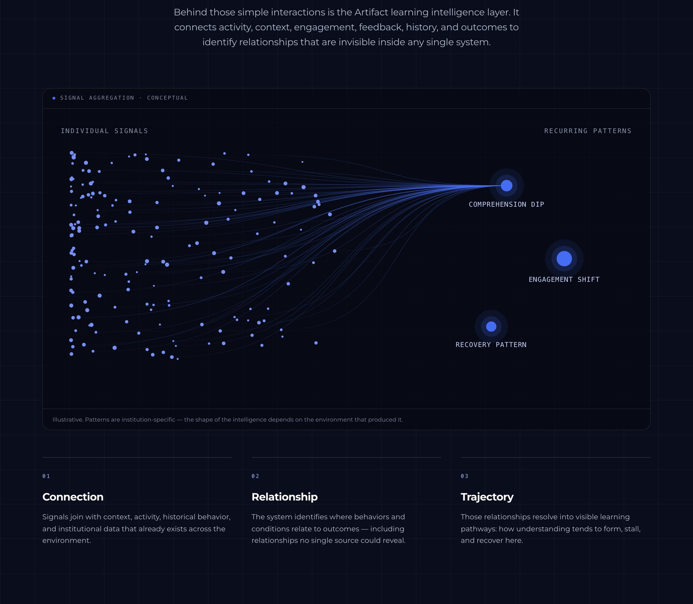
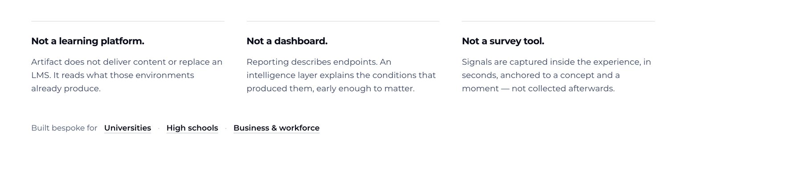
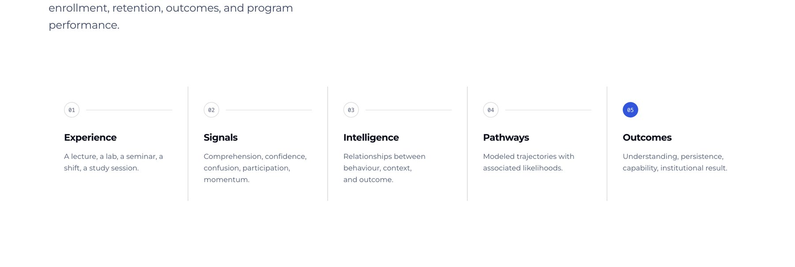
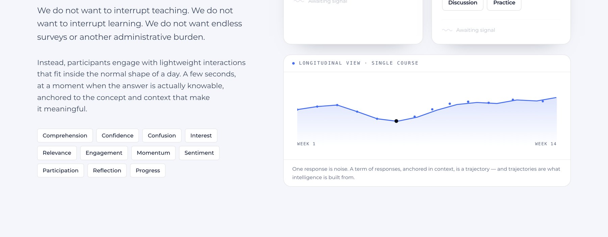
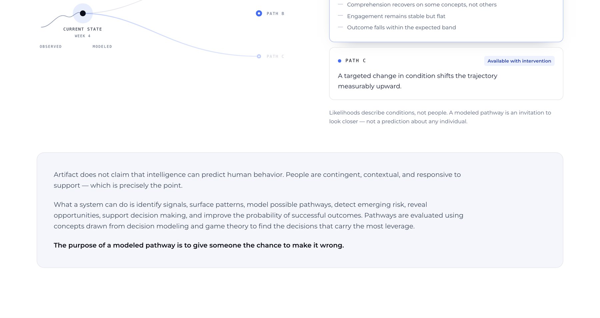
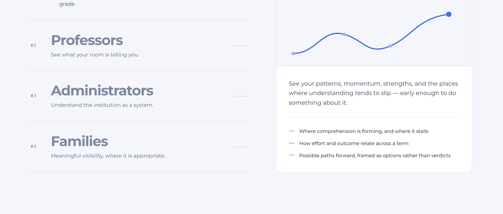
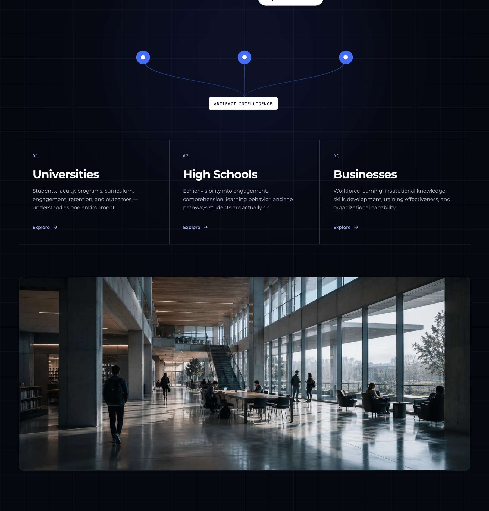

Artifact Intelligence
Learning leaves signals.

Overview
Institutions can see what happened and almost never why. Artifact Intelligence is an interpretive layer between learning experiences and their outcomes, reading the signals a learning environment already produces, and turning them into paths a student, a professor or a provost can act on.
The position
Not a learning platform. A layer between experience and outcome.
Not an LMS, not a dashboard, not a survey tool. The category had plenty of systems recording what happened and almost nothing explaining the conditions that produced it, so the product is defined by what it sits between.

The premise
Learning environments generate intelligence every day. Almost none of it is read.
Comprehension, confidence, confusion, interest, relevance, engagement, momentum, participation. The signals already exist inside ordinary teaching. The gap is that nothing interprets them.

The constraint
The best data doesn’t interrupt the experience.
Collected during natural learning moments rather than through intrusive surveys. If measuring the thing changes the thing, the measurement is worth less than the disruption cost.

The shift
From reporting what happened to understanding what might happen next.
Modelling pathways with probabilities attached, so the conversation moves from a post-mortem to an intervention while there is still time to make one.

The audiences
Different people. Different intelligence.
The same underlying signal produces different intelligence depending on who is asking. A student, a professor, an administrator and a family each need a different answer from the same data.

The approach
Your institution is not generic.
Every institution carries its own pedagogy, student population, programme structure and definition of success. The platform is built to that context rather than shipped as one configuration for everyone.

Outcome
The platform does not try to replace the learning environment. It tries to explain it.
Explore the platform ↗Next project
Bose
Digital retail experiences designed inside a fixed physical display system.